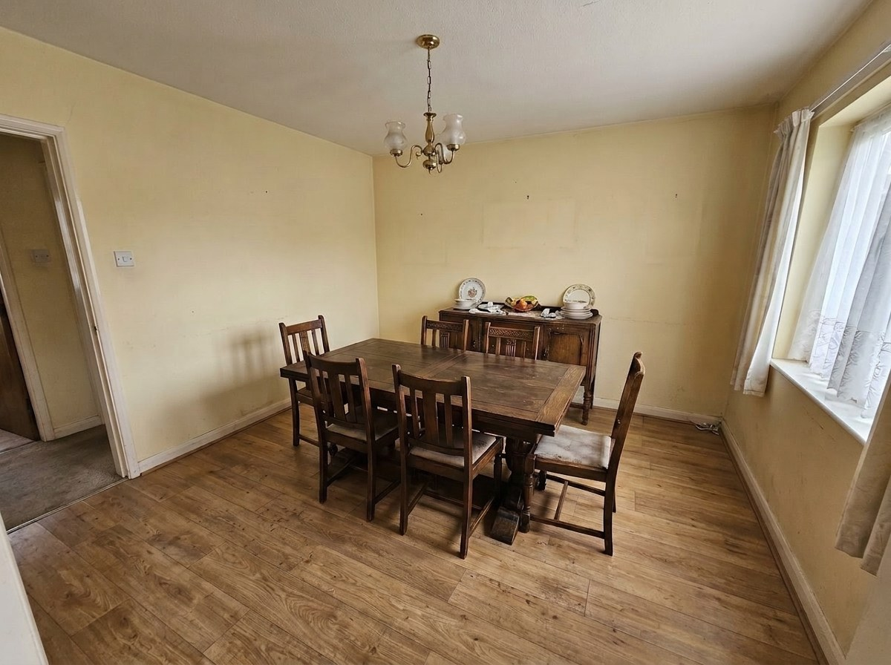
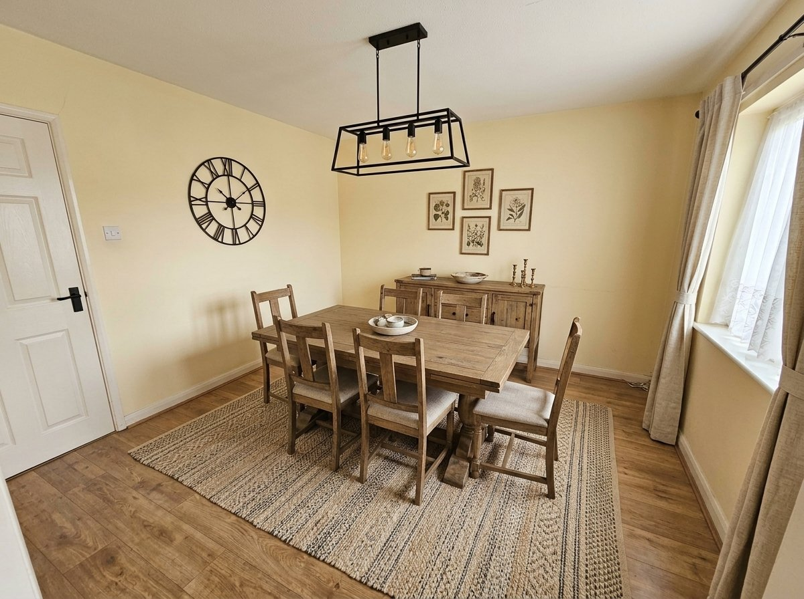

0 of 1 runs pass. Pass = marked pieces gone, no unmarked piece lost, nothing new invented, layout and camera unchanged, style applied.
one chair of a dining set (right-hand end) (farmhouse)
No names: step 1 left the marked chair in place, twice (first edit and retry; the local check caught both). The restyle then also closed the doorway. 3 image call(s), 28 s, edit frame 0.98, marked piece gone: false

